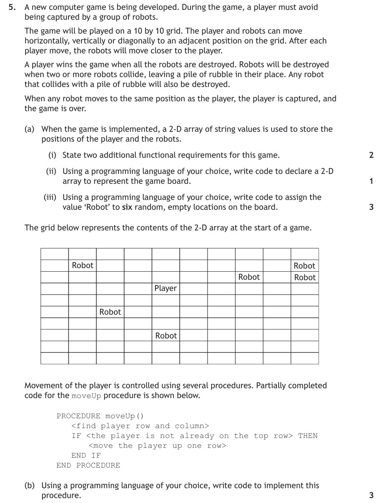
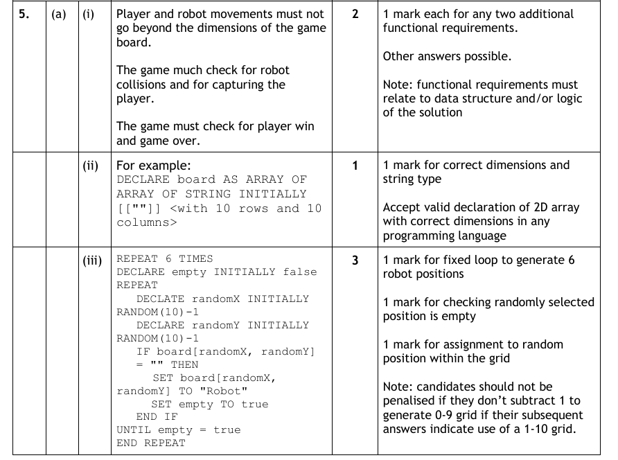
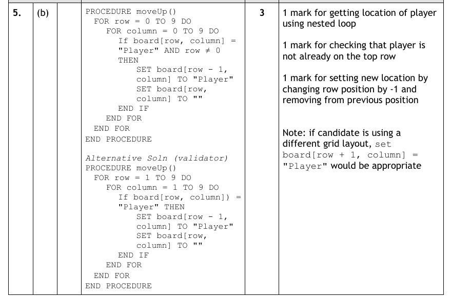
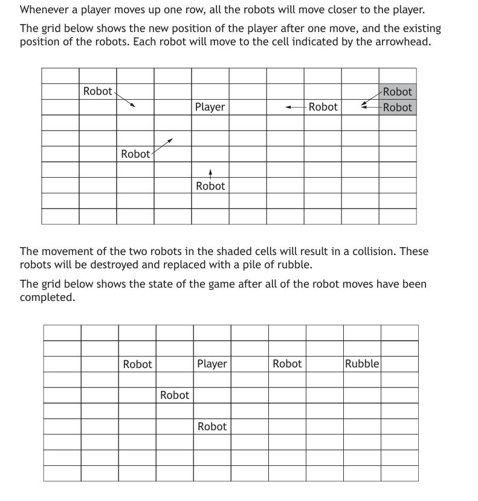
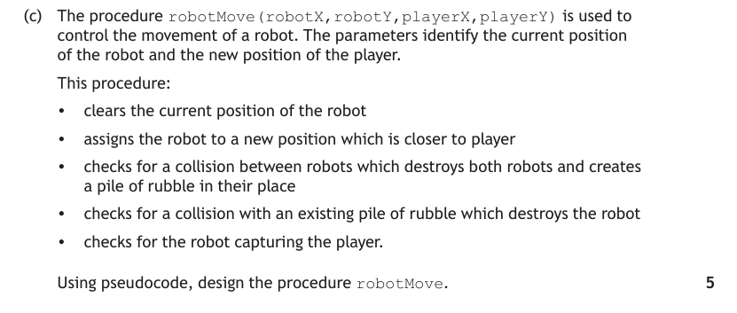
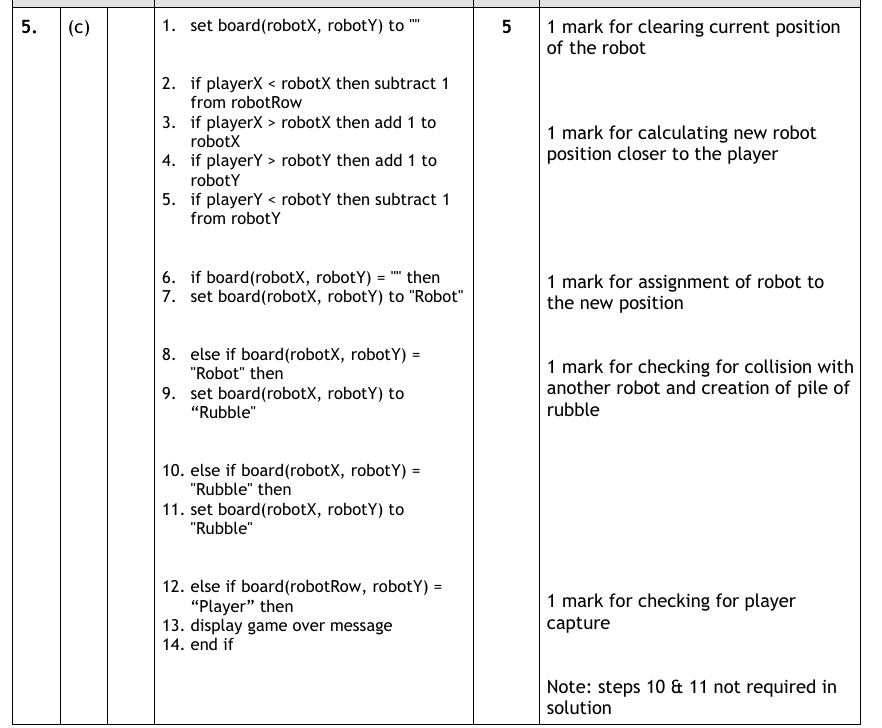
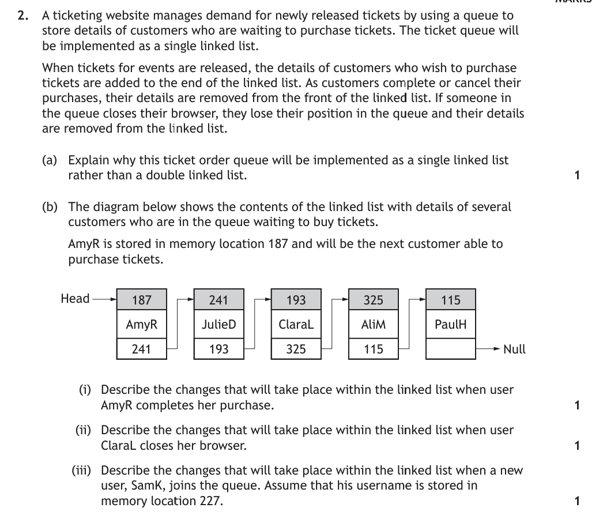
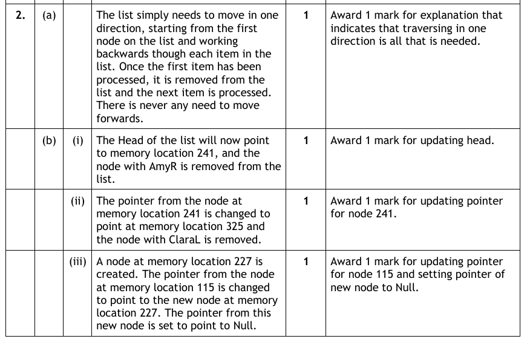

Data Structures at Advanced Higher
At Higher you stored data in parallel 1D arrays, records and arrays of records. All three are still required at Advanced Higher, joined by two new structures: the 2D array (which you must implement) and the linked list (which you must be able to describe and exemplify — but not implement). A third new structure, the array of objects, belongs to object-oriented programming and is covered on the OOP page.
Key Terms
stock[3].price.grid[row][column].Recap — Records & Arrays of Records
Quick reminder from Higher, because Advanced Higher questions still use these freely. A record groups related fields of different data types under one name; an array of records stores a list of them:
RECORD Student IS {STRING name, INTEGER mark, BOOLEAN passed}
DECLARE pupils AS ARRAY OF Student INITIALLY [ ] * 20
SET pupils[0].name TO "Aisha"
SET pupils[0].mark TO 67class Student:
def __init__(self, name="", mark=0, passed=False):
self.name = name
self.mark = mark
self.passed = passed
pupils = [Student() for i in range(20)]
pupils[0].name = "Aisha"
pupils[0].mark = 67Notice the access pattern: index chooses the record, field name chooses the value — pupils[0].mark. Compare this with parallel 1D arrays, where the same index across several arrays links related data. Being able to argue which structure suits which problem is an Advanced Higher skill: records keep an item's data together and pass through parameters as one value; parallel arrays let you sort one attribute quickly but risk the arrays falling out of step.
From 1D Arrays to 2D Arrays
A 1D array is a list of values of one data type, accessed by a single index — scores[4]. A 2D array extends this to a grid: every value still has the same data type, but each element is addressed by two indices — row first, then column.
scores[3][2] is the value in row 3, column 2. If each row is a pupil and each column a test, then row 3 holds one pupil's four test scores, and column 2 holds every pupil's score on test 2.
| [0] | [1] | [2] | [3] | |
|---|---|---|---|---|
| [0] | 67 | 72 | 58 | 81 |
| [1] | 45 | 51 | 60 | 49 |
| [2] | 90 | 88 | 93 | 85 |
| [3] | 71 | 64 | 77 | 70 |
scores[3][2] = 77.
Declaring and traversing a 2D array
DECLARE scores AS ARRAY OF ARRAY OF INTEGER INITIALLY [ [0]*4 ]*5
# nested loops — outer loop rows, inner loop columns
FOR row FROM 0 TO 4 DO
FOR column FROM 0 TO 3 DO
SEND scores[row][column] TO DISPLAY
END FOR
END FORscores = [[0 for c in range(4)] for r in range(5)]
# nested loops — outer loop rows, inner loop columns
for row in range(5):
for column in range(4):
print(scores[row][column])scores = [[0]*4]*5 creates five references to the same row — change one element and all five rows change. Use a list comprehension as above. In the exam, the classic error is swapping row and column indices — always say to yourself "row, then column".Typical 2D array processing
# total of pupil 2's scores (fixed row, loop columns)
DECLARE rowTotal INITIALLY 0
FOR column FROM 0 TO 3 DO
SET rowTotal TO rowTotal + scores[2][column]
END FOR
# average of test 1 (fixed column, loop rows)
DECLARE colTotal INITIALLY 0
FOR row FROM 0 TO 4 DO
SET colTotal TO colTotal + scores[row][1]
END FOR
SEND colTotal / 5 TO DISPLAYEverything you know about standard algorithms transfers: a search or find-max over a 2D array simply fixes one index and loops the other, or nests two loops to visit every element.
2D Array Visualiser
Placeholder for a visualiser: type an index pair and watch the matching cell highlight; step through nested loops and watch the traversal order light up row by row.
Worked Examples — 2D arrays in the exam
This 2022 question works a 2D array hard across several parts. Attempt each part before expanding.

Read the declaration first — establish what each row and each column represents before touching the code. Then trace the indices carefully: which index is fixed, which is looped?




Part 3 asks you to write code — remember marks are for demonstrating understanding of the 2D array processing (correct indices, correct loop bounds), not for perfect syntax in any particular language.

Linked Lists (Single & Double)
A linked list is a dynamic data structure. Unlike a 1D array — which stores each element sequentially in memory and typically has a fixed size set at declaration — a linked list has no fixed size: it grows and shrinks as required. Each element, called a node, has its own address in memory and stores two things:
- the data item itself;
- a pointer — the address of the next node.
The start of the list is the HEAD, and the final node's pointer is NULL. To find any item, you must start at the HEAD and follow the pointers node by node — a linked list is a linear structure that a single linked list can only traverse in one direction.
Why bother? Insertion and deletion
This is the heart of every linked-list exam question. To insert into a 1D array at a given position, every element beyond that point must be shifted along one place in memory; the same applies to deletion. In a linked list, the data never moves:
- Insert: create the new node anywhere in memory, then update one pointer — the previous node now points to the new node, and the new node points to the one that follows;
- Delete: update the previous node's pointer to skip the deleted node, and free its memory.
Because only pointers change, inserting and deleting are more efficient in a linked list than in an array. One more difference worth quoting: a linked list can store data of multiple data types, where a 1D array is usually limited to one.
Double linked lists
A double linked list adds a second pointer to every node, storing the address of the previous node. The trade-offs:
| Single linked list | Double linked list | |
|---|---|---|
| Traversal | One direction only (HEAD → NULL) | Both directions |
| Memory | One pointer per node | Extra memory — two pointers per node |
| Deleting a known node | Must traverse from the HEAD to find the previous node's pointer | More efficient — the previous node is found instantly via the previous pointer |
| Inserting | Traverse until the position is found | No traversal needed to insert at the start, at the end, or before/after a given node |
Worked Example

Approach: sketch the nodes with their pointers before answering. For any insert/delete question, identify which pointers change — and remember the efficiency argument: no data is moved, only pointers are updated.

Test Yourself
Attempt each question first, then expand the marking instructions to check your answer.
A 2D array is declared to store the rainfall (in mm) for 12 months across 5 years: rainfall[year][month].
(a) Write the reference for the rainfall in the third year, first month (assume indices start at 0). (1 mark)
(b) State the loop structure needed to total the rainfall for month 6 across all five years. (1 mark)
Marking Instructions
- (a)
rainfall[2][0]— row (year) index 2, column (month) index 0. (1 mark) - (b) A single loop over the year index with the month index fixed:
FOR year FROM 0 TO 4: total = total + rainfall[year][6]. (1 mark)
A music streaming app stores a queue of upcoming tracks. Users constantly insert tracks into the middle of the queue and remove tracks from it.
Explain why a linked list is more suitable than a 1D array for storing this queue. (2 marks)
Marking Instructions
- Inserting/deleting in a 1D array requires all elements beyond that point to be shifted in memory (1 mark);
- in a linked list only a pointer is updated and no data moves — so frequent insertions/deletions are more efficient. (Also acceptable: a linked list is dynamic so the queue can grow/shrink without a fixed size.) (1 mark)
State one advantage and one disadvantage of a double linked list compared to a single linked list. (2 marks)
Marking Instructions
- Advantage: it can be traversed in both directions / removing or inserting at a known node is more efficient because the previous node is found via the previous pointer. (1 mark)
- Disadvantage: it requires additional memory, as an extra pointer is stored in every node. (1 mark)